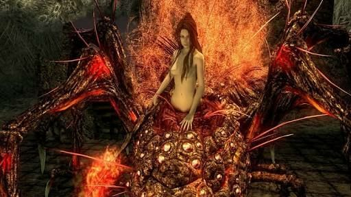

List of Bosses
Taurus Demon
Bell Gargoyles
Asylum Demon
Capra Demon
Ceaseless Discharge
Centipede Demon
Quelaag
Crossbreed Priscilla
Dark Sun Gwyndolin
Gaping Dragon
Great Grey Wolf Sif
Iron Golem
Ornstein and Smough
Pinwheel
Taurus Demon

A bull demon who managed to escape to the surface when Lost Izalith came into being.
This boss is weak to Fire and Lighting, so bust out your Fireballs, Firebombs and Gold Pine Resin we got beforehand. After entering the fog gate, immediately head right and up the ladder and kill the two undead bowmen. Then, head down to trigger the fight.
Ensure you have all of your items equipped and at full health- you may need it for this one. After it appears, immediately run back towards the ladder and let the Taurus Demon follow you. Then, you will be able to make it all the way up the ramparts and perform a devastating plunging attack. Do be aware that if you linger at the top of the rampart for too long, Taurus will jump up and knock you right back down.
In terms of fight patterns, Taurus has 3 basic moves when you fight him on the ground. Do be aware however, that if you do a plunging attack, you can set yourself up to be trapped between its legs. The Taurus is hard to tell, meaning that it's difficult to accurately pattern which move is going to come next. As a precaution, if fighting him on the ground, then ensure you stick to his behind. Only then will you really be safe from its attacks.
Do also be aware of blocking in this area, the multiple drops off the side of the bridge are incredibly hazardous, and we've fallen victim to them more than a few times. Try to run in between its legs to dodge, and make sure you've got the Heater Shield from the item vendor equipped in order to get a 100% physical block against its attacks.
Remember that Gold Pine Resin from using the Residence Key? This is your ticket to dealing a huge amount of damage to Taurus Demon. Use the item, and then climb up the ladder to do a plunging attack that will take off around a third of is health. Rinse and repeat this, and you will have it down in no time.
However, if you are choosing to fight it on the ground. Taurus' three Moves are a quick slash to the side, a piercing attack down and a jumping attack to close distance. Be wary of casting Fireball or using items from far away, as it can easily spell your doom.
In short, you will want to avoid being up-close to Taurus as possible. The best strategy here is to use the Gold Pine Resin and loop the jumping attack until it dies. If not, you may have difficulty fighting it on the narrow bridge, which is less than ideal, since even if you are able to block the Taurus' attacks, it can still stunlock you if you do not have high enough endurance.
Always keep it near to where you entered the boss arena, then you will have the most options available to you if you want to kill it even quicker. Again, due to the size of this one we would again recommend not locking on if you want to deal with the camera being a little finicky due to the tight space of the arena, this will again allow you to move freely and also dodge and weave through its legs effectively.
Bell Gargoyles

Four (although only two attack the player) who guard the entrance to the first Bell of Awakening. Presumably a test for the Chosen Undead.
The Bell Gargoyles are the fight that you can summon someone in to help you. You can summon Solaire of Astora here as an NPC to help you in this fight.
Proceed forward after the fog gate to trigger a cutscene, then you will be greeted by the first Gargoyle. Their tails are cuttable, and will significantly nerf their attacks, so be sure to do so if you can.
There are a few basic attacks that the Gargoyle has at this stage in the fight. They're mostly all physical attacks which you should be able to block with any 100% Physical Shield. However, do be careful not to get blockstunned to oblivion.
Keep your distance where you need to, and focus your attacks on the tail. This fight is a little bit different to many of the others you will encounter in the game, in the sense that once you have the Gargoyle down to half health, another one will come swooping down.
Don't panic, but now these Gargoyles not have access to a fire AoE attack, which it will spam at you if you try to keep your distance. This second Gargoyle spawns with half health, but keep your focus on the first Gargoyle that you fought. The best thing to do here is to run, head on to the boss. This way, you will be able to get a close range advantage, and the Gargoyles can't use their firebreath attack against you.
If you have an NPC or Player summoned, this will help a lot with drawing the aggro from you onto someone else, meaning that you can reliably split the two Gargoyles apart. This quest is pretty easy if you summon Solaire of Astora, as his lightning attacks will be able to do some pretty significant damage against them. Additionally, if you are playing as a Pyromancer, you will have very easy access to the Gargoyle's Weakness - fire!
While the Gargoyles spew fire, they're actually weak to it too- be sure to use this advantage and use up all of your fire bombs or Fireballs. This is especially useful if you want to split both Gargoyles up, or do damage to them both at the same time, which is incredibly potent.
Either way, after lopping the first Gargoyle's tail off, it should weaken it a bit, too- be wary of the short range attacks, and try to not get stuck in between them, or else you'll be in for a world of hurt.
Never have you back facing them both at the same time, and ensure that you know where you're going. The Arena for this fight is pretty tight, so be sure to not get stunlocked and fall off of the roof- you'll need to try again. Stay central focusing your attack on the original Gargoyle.
Once you get rid of the first Gargoyle, this fight should be a pinch. The second Gargoyle likes to spew fire, so try to get up close and roll behind the Gargoyle, then the fire attack will manage to not hit you.
Keep up your attacks and follow the tips we gave you to get rid of this second Gargoyle. This is a pretty easy fight once you have learned their moves and patterns- you will have them taken out in no time. Just remember to keep your distance on the fire attacks and go in during the windup. Just ensure you kill the first Gargoyle as quickly as possible.
Once you've killed them, head up the tower and ring the first bell. On your way down, you will encounter Oswald of Carim, an NPC and merchant who sells some pretty interesting items. Head back to where we first met Solaire of Astora, and you will recall a locked door, which is where you will use the Basement Key we got earlier.
Asylum Demon

Demon Firesage is a boss of Demon Ruins, and is pretty much identical to the Asylum Demon and Stray Demon, sharing a lot of the same moveset. If you're having trouble with the Demon Firesage, you've come to the right place, this fight is different and in a tougher environment, meaning that some of the same strategies that came in handy for those bosses might not work quite as well here.
Demon Firesage is pumped up with Fire energy, and dishes out some fierce attacks that cannot be blocked by anything but Greatshields, if you are not rocking a Greatshield, we would strongly recommend that you instead rock your weapon two-handed and with magical buffs using Great Magic Weapon or Crystal Magic Weapon.
From here, you are going to want to be able to be comfortable with rolling out of the way of attacks. Equip some lighter armour (such as the Gold-Hemmed set) and you will have access to a very fast dodge.
Right, in this arena, ranged attack is incredibly dangerous, this is due to the Firesage having an area of effect blast that it will spam at you if you are not within range of its axe. Although the blast is directly in front of it, it will do a swing before to get you in range.
Beware when fighting this thing at range, we would strongly recommend you go melee for this fight as solely using magic or arrows is not viable.
Onto its attacks. The Demon Firesage also has vertical or horizontal axe swings that can also be comboed into each other, meaning that you will want to watch out for any followup attacks- especially on the horizontal swing. However, in the middle of the swings you should have ample time to dodge behind it, which is the safest area to stay in.
This is because of a few other attacks. It will leap at you if you try to heal at range, and there is also this type of demon's signature ground pound attack. This Demon Firesage is devilishly simple to beat, all you need is some decent timing and to space yourself behind it during one of the enemy's swings.
This will lead to the Demon not being able to hit you, as many of its attacks come from the front. The main one that you have to watch out for when positioning yourself is the area of effect blast attack.
More often than not, the Firesage will attempt to jump back to put some distance between you and itself. This is to lead up and get you back in front of the Firesage, vulnerable to its attacks. Try to position yourself in a corner, where you will be able to handily avoid most of the Firesage's attacks and also dish out some meaty damage at the same time.
One thing that we would definitely suggest avoiding is using Fire Weapons, Chaos Weapons and Pyromancies against the Demon Firesage, you will do very little damage and it's very much worth upgrading another weapon to take this one out if you are finding it difficult.
Instead try to go and upgrade a normal weapon up to +14 and you will be dishing out heaps of damage, in addition to being able to enchant it further with sorcery. After killing the Demon Firesage, push onwards and further into Demon Ruins.
Capra Demon

A goat demon who managed to escape to the surface when Lost Izalith came into being.
As soon as you traverse through the fog gate you will want to weave right and then left- up the stairs. Alongside the boss are two dogs, who you need to get rid of as soon as possible. From here, kill the two dogs to face Capra alone.
One of the most difficult things in Dark Souls is fighting multiple enemies in a tight space. With the fast pace of the dogs and heft of Capra's greatswords, you will want as much wiggle room as you can possibly get before focusing on the actual boss.
Hopefully, with the dogs out of the way you will be able to face Capra alone. Note how the stage is built here, you do not want to get caught in a corner, or in the arches on the right. Being here will make you incredibly susceptible to Capra's greatsword attacks. It is useful at the start in order to get around the dogs and Capra, but use it for the at purpose alone. There are also more nooks, with the tight space meaning that you may not be able to dodge many attacks at any one time.
This means, that you will be reliant on your 100% Physical damage blocker Heater Shield (Seriously, go pick one up from the merchant in the Undead Burg if you have not already.) From there, you will be able to defend, keep an eye out on our endurance however, as you will often find that if you get stunlocked against Capra, it will very very easily kill you.
Onto it's attacks, Capra has a fair few, the dual sword slashes left and right, meaning that you don't want to hang around the sides of its torso. In addition to this, it also brings both of its swords together and does a slam downwards. This is unblockable, so be sure to not get stuck and get stunlocked by it's followup side-slash. If you try to keep your distance from Capra, you will find that it also has a jumping slam, so try to roll out of this one, too.
Capra is actually weak to fire, so while you can use Firebombs and Fireballs, we wouldn't really recommend it due to windup and casting times. If you do choose to do this, ensure you've made your way up the stairs for a bit of distance against the Capra. There is a better way of killing the Capra, but it is going to be pretty risky.
First, you will want to kite the Capra over to the alcove next to the stairs, then you want to sprint, go up the stairs and do a plunging attack. When you do this, you will be able to take off a decent chunk of its health. From there, repeat this process, unless you find that the Capra follows you up.
If this happens, take it on, ducking in and out with a fast weapon to ensure you don't get hit by any of its attacks. The real key to this fight will be how effectively you will be able to utilise the staircase. Ensure you manage to get there, and then attack with whichever method we used above.
This is a big sticking point for many first-time players of Dark Souls, so if you are finding it pretty difficult, upgrade your weapons and be sure to get some decent armor in order to tackle it better with a bigger advantage. Once you manage to take the Capra Demon down, you will get some souls, and a key to The Depths.
Ceaseless Discharge

The brother of the Daughters of Chaos. He watches guard over his sister's corpse.
This fight can be easily won almost immediately. This can be done by aggroing Ceaseless Discharge at the corpse, then running back towards the Fog Gate. He will slam his hand down, hit it a few times, and then Ceaseless Discharge will clip off of the edge and to his doom.
If you have already aggroed him, this method only works if you go back to where the corpse was.
If you do not feel like cheesing Ceaseless Discharge, we've got another strategy below.
Right, now that you've passed the Fog Gate, you will need to actively aggro Ceaseless Discharge.Run forward and take the first right path and follow it down. After following it, you will see Ceaseless Discharge for the first time, as you can tell. He is a very big boy.
Ignore him for now, but be prepared to trigger this boss battle. Ensure your weapons are fully upgraded and have as many healing items as you can. With that warning out of the way, follow the path past Ceaseless Discharge and you'll see a corpse with items on it, stealing the items will trigger the fight.
We recommend high physical defense, and two-handing your weapon all the way through this fight, as many of Ceaseless Discharge's attacks cannot be blocked.
The first attack you want to be most aware of is the Fire Slam, which Ceaseless Discharge will perform if you are too far away. This is incredibly dangerous, in addition to being an unblockable attack, so be sure to stay aware of how far away you are from it. In addition to this, when you get close, Ceaseless has a variety of attacks that are incredibly hard to block, and also knock you back.
Before getting up close, ensure you have buffed your weapon using an item or sorcery to maximise your damage output. You're only going to have a small window to deal damage so ensure that you're also two-handing your weapon, your shield is not going to do anything versus Ceaseless Discharge's arsenal of unblockable attacks.
The most common attack this boss does while you're up close is the tentacle slam, where you should be able to read the windup and dodge out of the way in the open area. This will give you a small window to attack him. You're going to be repeating this in order to kill him efficiently.
Ceaseless Discharge also has a double-swipe, which you can block, but is incredibly difficult, as he will then slam the arena. His most potent attack at close range would be the double slam, which is hard to telegraph, but you will need to roll a second time in order to dodge this one. He has a pretty limited set of attacks, and it will not be too hard to learn all of them pretty quickly, the key here is to try to dodge as quickly as you can during the tentacle slams.
In terms of the arena and environment you fight him in, Ceaseless Discharge can be avoided by running away, but this will leave you open to his fire slam attack, which can cause you some trouble while on the stairs. Be sure to keep your stamina up and laying the damage on thick where you see a window in order to kill this... Ceaseless Discharge, which is a pretty gross name once you think about it.
Centipede Demon

The Ceaseless Discharge was once given the Charred Orange Ring by his sisters to stop his pain. When he dropped it, the centipede Demon was born.
Centipede Demon is one nasty bugger. It comes very quickly after the last boss fight, and is much more relentless, simply due to the arena that you're going to fight it in. There is a lot of Lava here, which is going to be more of a dangerous enemy than the boss itself. Try to stay on the ground here- and summoning Solaire of Astora here is a great idea, as he cannot be damaged by the Lava.
There are a few key points here that you're going to want to know. Firstly, for the love of god do not use a Fire Weapon, Chaos Weapon or Pyromancies. The Centipede Demon is fully immune to it and it will not do any damage whatsoever.
If you do not have a weapon that is any of those, we would recommend upgrading a weapon to +14 and enchanting it further with Great Magic Weapon or Crystal Magic Weapon for an extra damage boost.
Secondly, you can actually sever the tail of the Centipede Demon and make this fight a lot easier. As difficult as it sounds, try to target the tail in the initial stages of the fight with a bow, or melee attacks in order to sever it and get the Orange Charred Ring, this will then allow you to traverse through the lava unscathed. It does not take too much to sever the tail, and we recommend doing this as quickly as possible.
If you have ranged Sorceries, this is the time to use them Soul Arrows and Homing Soul Arrows are incredibly potent, and dish out a whole lot of damage, to boot.
If you are playing melee, we would recommend that you head towards the right, which is significantly less covered in lava than the rest of the arena. From here, you will be able to dodge it's arm attacks pretty handily to get close and do some serious damage. Again, if you can roll towards the tail, do so.
When up close, beware of the Centipede Demon's attack which can also grab you, in addition to the jumping attack which will break your lock-on. You should have enough time to roll out of the way and towards safety. Your biggest window is going to be when the Centipede Demon attacks with its arms.
When the boss is at low health, it will begin to do a homing fireball attack which is incredibly potent in addition to being hard to dodge. The Centipede Demon will usually cast this when you run away to heal.
In addition to this, the jump attack also gains an explosion, which can quickly set you in the lava. We recommend carrying a Divine Blessing or Hard Humanity around to fully restore your health if you get hit, as it will fully restore your health.
If you need larger windows to defeat this boss, we definitely recommend summoning in Solaire, in addition to doing a lot of damage, he will also be able to eat a lot of the Centipede Demon's attacks for you, meaning that you should be able to handle it and dish out loads of damage no problem.
The only problem with this, is that the fight can easily be drawn out into the Lava away from you, so just aggro the Centipede Demon back in order to draw the attention back on yourself. Then, you should be able to draw it back onto land and attack it from there and let Solaire get most of the heat.
Quelaag
One of the Daughters of Chaos. She stays in her domain and gathers humanity for her sister, the fair lady.
Quelaag is a very difficult boss fight, she spews the arena full of lava, has devastating AoE attacks, and can hunt you down at a moment's notice. With multiple lava attacks that stay on the ground for a period of time, you will definitely want to be keeping an eye on the state of the arena at any given moment of time. Furthermore, in addition to this, Quelaag has large-range with her sword, so be sure to not get caught up in her flurry of attacks, which can easily stunlock you.
Right, you will want to keep your shield up for this fight, and find one that has decent fire resistance, as Quelaag's sword attacks deal fire damage in addition to physical. Be sure to keep moving in this fight to avoid her pouncing attack, which will almost always kill you. We will be breaking down her sword attacks first, of which she has 3.
There is a sword combo, which does 2 swipes followed by a stab, the best way to avoid this is to roll around to her hind legs and start attacking. There is a single swipe that can be avoided by simply walking backwards diagonally, as well as a sword stab, which will deal a huge amount of fire damage. Again use the strategy of strafing diagonally backwards in order to get out of the way of these.
The moment you see Quelaag slump forward, you will want to get away from here as soon as possible. She's charging a flaming AoE attack that can be a one-hit-kill for low Vitality players. This is often followed up by an additional Lava Spew, so do watch out for her attacks.
You are also able to summon Maneater Mildred into this fight if you are in Human Form, and it is a great way of drawing aggro away from you in order to focus on attacks to the rear. Do be aware however that Maneater Mildred is able to die pretty quickly in this fight, if she manages to stay stood in the Lava that's being spewed.
In her rushdown form in Spider Mode, you will want to keep your distance away from her unblockables and watch out for the windup on her lava spewing attacks, which should be relatively easy to dodge. From here, you will also have a strange opening to the left of her, when she is using her sword attacks roll towards her front leg and counterattack. Then, you will be able to do a bit more damage.
Once you've managed to get Quelaag's health down a fair bit, you will notice that she will begin to attack and spew lava and her AoE more often, be sure to read her obvious tells to guess how to react. Really, with the sword attacks, you can just strafe diagonally backwards, it's as simple as that when it comes to close range, as long as you keep your eyes on the arena and placement of the lava in front of you, then you might be able to do a bit more damage.
With these tips in mind, you should have everything you need to take this spider-witch down. Again, keep an eye out for that pesky AoE as it becomes more regular throughout the fight, and there is a summon available to you, should you need it.
Crossbreed Priscilla

Speculated to be the daughter of Gwynevere and Seath the Scaleless.
Being a half-breed, she lives
in the Painted World, hiding herself away from the Gods. Ironically enough, the Painted World holds
much of what the Gods fear.
Priscilla is a completely optional boss, if you go past her, you will head back to Anor Londo. However, if you want to fight her, you will be able to do so with relative ease, especially if you've left it so that you have a fully-upgraded weapon.
Be sure to understand that fighting Priscilla will make her aggro, so you only ever get the one option to walk past and leave her unharmed.
If you choose to fight Priscilla, you will first be presented with her signature attack- invisibility. This will make her hard to track and lock-on to, but if you follow her footsteps into the grass, you should be able to follow her movements and defend. To get her out of invisibility, you will need to stagger this boss, which is fairly easy as long as you keep up the damage when you find an opening or track her appropriately. This is especially easy if you are carrying a heavy weapon.
Priscilla has sweeping Scythe attacks that can cause bleed damage, even if you are defending. Be sure to keep an eye on this gauge while fighting her, as Bleed damage can be devastating and kill you if you are not fully healed and prepared for it. The Scythe swing can be followed up by a few more, but do be careful of the immense bleed damage. In addition to this, Priscilla only has one other move, which is a blizzard attack, which is very easy to dodge.
This is a very simple boss fight, and if you are attacking her while she is invisible, you will actually be dealing a fair amount of damage until she staggers, revealing her health bar once more. Here, you will be able to just wail on her.
Beware of another hazard whilst fighting this boss- the arena. You can easily guard aswipe of the scythe and be knocked forwards or backwards if you are defending while Priscilla is invisible. This can knock you off of the boss arena and to your doom if you're not careful, always be tracking her footsteps, so you know where to defend.
Additionally, if you want to heal for some respite, be sure that you run to the opposite side of the arena that Priscilla is on, as the range of her scythe can be pretty huge.
If you want something extra, attack Priscilla's tail to get Priscilla's Dagger. Other than that, Priscilla is an incredibly easy boss fight, and shouldn't give you too much trouble, so long as you have upgraded your weapons enough to take her on.
After defeating Priscilla, you will want to go towards the opening and wait for a cutscene, where you will be transported back to Anor Londo. Beware though, if you rested at a bonfire on your trip, you will be teleported back and have to face those pesky painting guardians after the boss fight.
Dark Sun Gwyndolin

Son of Gwyn, raised as a daughter because of his affinity for moonlight sorcery. Is the guardian of
the Darkmoon Tomb and leader of the Blade of the Darkmoon covenant.
He is keeping up the
illusion that Anor Londo is still under the gods' control with his magic.
To get to the hidden boss, Dark Sun Gwyndolin, first ensure that you do not want to join the Blades of the Darkmoon Covenant. From there you will want to ensure that you have the Darkmoon Seance Ring from The Catacombs and have it equipped.
From there, you will want to warp to Anor Londo. Here, you want to head to the lift and rotate it counter-clockwise and head down the spiral staircase towards a statue of Gwyn, lighting the bonfire along the way. Then, if you have the ring equipped properly, you should be able to head down a flight of stairs.
Then, you will hear a voice speak out to you. Kneel if you wish to join the Blades of the Darkmoon, or head through the Fog Gate to face Dark Sun Gwyndolin.
Ensure that you have your weapons upgraded to their maximum, and equip some decent Magic Defense armour, as Gwyndolin is going to like to hurl that at you. Additionally, if you have occult weapons, you will be able to do a little bit of extra damage. Head through the fog door.
Immediately upon entering, you will find yourself in an infinite hallway, with Gwyndolin at the end. To your left and right are pillars, which you will be able to hide behind to heal or start your ranged assault, which is a viable strategy here. Gwyndolin has a few tricks up their sleeve while you're exposed in the hallway, which we're going to break down.
The first of their attacks is a sustained arrow assault, this will likely throw you off balance if you do not have a high stability shield or high poise, so what you will need to do is run in a zig-zag motion and go full serpentine, if you want to dodge these attacks and close distance on Gwyndolin.
Another of Gwyndolin's attacks is a homing Soul Spear, which is unblockable and incredibly fast. What we recommend doing as they cast this is to ensure that you run immediately to the left or right and ensure that you do not get stuck in any corners on your approach. The benefit to this is that you will be able to close distance enough to start doing melee damage on this boss.
The last attack in Gwyndolin's limited moveset is the homing Soul Arrows, which are incredibly difficult to run through, so ensure that you are defending or take cover when this spell is being cast.
Gwyndolin has some decent attacks to get you as you proceed through the corridor, so you might want to rush through some of these attacks as you get the hang of their patterns.
Finally, Gwyndolin will teleport as you get close, and then repeat those three attacks in different sequences. The most potent combination is the homing Soul Arrows, followed by the charged Soul Spear, which can kill you very quickly if you do not take cover as quickly as you can.
Then, you just want to deal as much damage as you can in quick succession in order to take this boss down, as they do not have much health at all, getting to the boss if you are a melee build is the hardest part of this.
After killing Gwyndolin, head down and towards the tomb, the chest on the right has the Brass armour set, and the chest in the middle holds a miracle.
Gaping Dragon

Huge dragon with human hands that lives at the bottom of the Depths. Mutated by his insatiable hunger into having a huge mouth as his body.
The Gaping Dragon is a pretty disgusting monster, and also a challenging boss to boot. Ensure you go into this fight with all of your items and armour fully repaired, or else you might encounter some trouble. Be sure to also have followed our guide to kill the Channeler hidden in the depths. If not, the boss will be buffed to be stronger, in addition to having magic arrows cast at you. If you do not kill the channeler, you will be in for a world of pain.
With that aside, the actual Gaping Dragon itself has two "stances" - These are easily recognisable. The upright form of the Gaping Dragon is pretty difficult to telegraph, and has a huge range of options available to it. The most notable of which is the acid attack, which will degrade your armour and weapons. Be sure to steer clear whenever it comes. Also be careful of staying around the Gaping Dragon's front, as it can grab you and deal massive unblockable damage.
What we recommend for this fight is to actually wait until the monster is in its "prone" form, and attack the head (a weak spot) for decent damage. Enchant your weapon with Gold Pine Resin from Domnhall of Zena just before this fight to really get those hits it, from there it is a matter of dodging and patience until the Gaping Dragon goes back down to its crawling form.
To deal some more damage to this beast, be sure to hang left of it, if it's in the upright stance - where it will attempt a tail sweep attack and miss. Additionally, since the monster's moves will break your poise, there is no real point of even using a shield in this fight. Instead, two-hand wield your weapon in order to deal some extra damage and make those windows really count.
The area is pretty open and large, so you might be tempted to hide near a pillar for protection, when you want to heal. However be warned, as these offer no protection, and is also a sure-fire way to leave yourself open to attacks. Instead, try to find a healing window after the Dragon uses one of it's larger attacks, meaning that you will be able to heal after it recovers from that.
Additionally, if you're feeling brave you can also try to go and cut the Gaping Dragon's Tail, which if done successfully will net you a Demon King Greataxe. Our strategy to get the tail cut would be to stay to the left of it while it recovers from the prone form. This will give you a window to attack the tail, and is a good little reward for your work.
When it charges up a flying attack, be sure to run to the tail or away, as this AoE hit can do a lot of damage. The same goes for the crawling, while the monster is prone- it is unblockable and will deal a load of damage. It's a tough fight, but just make sure to be patient and try to pattern its unpredictable tells which will then lead you to victory.
If you are going for a ranged approach, you may want to summon in an NPC or another player to help, this will be a very challenging fight to take on from a distance. Again, this fight will be made a whole lot easier if you have Gold Pine Resin to use on your weapon.
The key to this fight is patience, and using your items and waiting a whole lot. Follow these tips to take down the Gaping Dragon and push onwards to Blighttown.
Great Grey Wolf Sif

Friend and companion of Knight Artorias. Accompanied Artorias into the Abyss but was unable to prevent the Dark of the Abyss from enslaving the once brave knight. Sif was saved from the evil of the Abyss by Artorias's last act of goodness by covering the wolf with his healing greatshield. Sif now guard the corpse of his former friend deep within the heart of the Darkroot Forest.
Great Grey Wolf Sif is a main boss in Dark Souls, for this fight we recommend that you upgrade all of your weaponry, and use a Pyromancy Flame with your favourite Pyromancies to set this dog alight. Ensure you're all readied up, and head through the door and approach Artorias' Grave.
Even though Sif is a massive boss, we will not want to attack it from range, as he can rush you down quickly, even if you're wearing armour with High Poise like Havel's Set and the Stone Set. You will want to be as agile as possible, or you will definitely be taken out by Sif.
Some of Sif's attacks are easy to block, so run in with a 100% Physical Shield like the Heater Shield and try to stay underneath Sif's legs, as it's the place that you will stay safe and he can't attack you as much with his attacks. The easiest way of getting to its hind legs is to roll through Sif's double-slash attack, which will get you to the other side of the Wolf.
Sif has a few more attacks, and is swift enough to easily catch you blindsided, especially if you are at range. Sif has a charged slash with a long windup and slashes upwards, but this can be very easily blocked by your shield.
Do be warned, as this charged slash can be followed up with a sword slam, which is a lot more difficult to dodge if you've just eaten an attack from the charged slash. If you have enough stamina left, just dodge this from the side.
The side-slashes from Sif can easily be rolled through, so again ensure that you've got a fast-roll with your equipment and head through. These are again often followed up with a slam, so be sure to watch out for this pattern. These slashes can also be additionally followed up by a leap away, which slashes you along the way.
Sif has a limited moveset, but simply due to its agility, you will want to make sure that you've got enough stamina to either dodge or tank the hits - these attacks in quick succession mean that you will also have some trouble eating a full combo - if you want to create some distance to heal, watch out for its charged slash which will be able to catch you off-guard.
Additionally, make sure that if you're using ranged sorcery, that you have enough time to actually cast before it rushes you down.
Melee is by far the best option when facing Sif, so just ensure that you're rolling with your best gear as it has a fair amount of health, even when facing it with a +10 weapon. When you've gotten Sif's health down, it will start limping, with attacks losing speed as you hit it.
Though bittersweet, this gives you more of a window of attack to take this boss down and gain access to receive the Covenant of Artorias, which allows you to safely traverse The Abyss and fight The Four Kings.
Iron Golem

The Final test for warriors heading to Anor Londo. The only heroes to have defeated him are the Chosen Undead and Black Iron Tarkus.
There is a bit of a trick to defeating the Iron Golem. If you're human, you can summon Black Iron Tarkus, whose summon sign is in the building to the right of the Fog Gate. He can reliably solo the entire fight for you. If not, then the Golem is easier than you think. The Golem has a few principal moves, and we will be going to go through them step by step.
In terms of blocking- you're going to want to two hand your weapon for this one, as blocking can easily send you flying off of the edge of the arena if you are not careful.
With the Golem's Attacks having a fairly obvious windup, be sure to use your roll and dodge out of the way of any attacks. If you absolutely must defend instead, then we would actually recommend that you have a 100% Physical Shield Equipped.
The first attack that the Iron Golem will often use is a slash upwards, this actually can travel forwards a fair bit, so ensure you defend well. From there, It will also have a stomping attack, so be sure to dodge well as it can deal some pretty serious damage.
The most deadly attack from the Iron Golem is definitely the grab, which can send you flying across the map and to your death. So, be sure to dodge this one, as it definitely caused an upset as we were writing this guide.
Back to the Golem- it has some forward swipes which can be pretty deadly and knock you off the stage, so we would recommend staying central, just to ensure that you encounter little to no issues along the way.
The biggest liability in this fight is the lock-on with the camera, it's actually easier to be aware of where you're standing and where to roll if you do not lock on to the enemy. It sounds a little bit mad, but that's really the easiest way to do it. If you stay locked on to the Iron Golem, then you will find yourself disoriented, and fighting the camera for most of the fight instead.
The Golem's openings are obvious, and whether you have a slow or fast weapon, you should have very little trouble fighting it- just be aware of any followup attacks that the Golem might use against you, as this could spell trouble due to the area that it is in. Once again, if you're having trouble, we'd recommend summoning in Tarkus to come and finish the job for you.
Tarkus can easily tank the Golem, and you can also chip away at it while he is absorbing most of the hits, he can fall off of the stage just as easily as you can, however- so do be aware that it might happen, if you're that unlucky.
So, poke at the Golem while it is distracted by Tarkus, and you should have very little trouble at all, soloing this fight can be difficult due to the area, but with a summon taking the aggro and dealing some big hits on this boss, it can become a bit of a breeze.
You can stagger the Iron Golem by repeatedly attacking its legs. Of course, this is easier to do with a summon, or if you have a weapon that can stunlock easily like a greatsword, you will be able to stagger and trip the Iron Golem over, leaving it open for a bigger assault.
Ornstein and Smough

Two knights of Lord Gwyn, they are tasked with guarding Gwynevere.
Ornstein and Smough is one of the toughest boss fights in the entire game. Before doing anything else, ensure that your weapons, armour and any curative items are all equipped and upgraded. We had our Melee Weapons upgraded to +10 here, anything less and it will be much more challenging. Before you even set foot through the fog gate, here are some basic tips.
Do not lock on to either Ornstein or Smough, be sure to know the general placement of each of these two for the duration of the fight in order to block their attacks. You can kill them one at a time, which we recommend doing- Then the boss fight enters a second phase - a powered up version of the last remaining boss. For this guide, we're going to recommend that you kill Ornstein first.
So, dealing with Ornstein is a bit of a pain, he has a few rushdown attacks that will definitely catch you off guard more than a few times. The first of which is a charging stab which locks onto your location, in addition to another Lunge which is a shorter range version of this.
He also can cast lightning bolts at you which home in on your location. He is all about catching you off-guard, which is why we're going to want to kill him first.
Smough is a lot slower than Ornstein, He has a charge attack which can rush you down, but you can dodge backwards and out of the way of this. In addition to this, he has a hammer combo which he will use when you are up close, in addition to a vertical attack which this is often followed up by. These are much easier to telegraph than any of his other attacks.
If you can, you should be able to find a Summon Sign for Solaire of Astora in the hallway outside the boss arena, he will help to draw the aggro away from you and will target Ornstein in the first half of the fight. Having something else to draw aggro is invaluable in this fight, so be sure to use him well.
Smough is very easy in his second phase fight - he will regenerate to full health, but his slow, telegraphed moves are much easier to dodge than anything else. Be sure to make a good use of the pillars for occasional respite during this fight, as you will almost definitely need time to heal. If you run out of healing items, make sure you have humanity or a Divine Blessing equipped for a full heal.
When looking to retreat to a pillar, be sure to stay as far away from the two bosses as much as you can, or else you may find the fight a lot tougher or having your heals interrupted. If you have any enchantments, such as the Great Magic Weapon spell that we got earlier, this will be incredibly useful for getting some additional damage on top of your weapon.
The same also goes for when dealing with Smough- who is weak to Lightning, when you are targeting him, Gold Pine Resin is incredibly effective and will work really well to get chunks of his health down very quickly.
This is an extremely challenging boss, and we do not recommend you going solo through it. Just remember to keep your eyes on Ornstein and kill him as quickly as possible, then enchant your weapons to lightning once he is down to deal with the slow and lumbering mega-Smough once he's defeated.
Again, this is one of the toughest fights in all of Dark Souls, and there is no shame in Summoning to get help. If you can get player characters summoned in, then even better, as Solaire will likely die during this fight.
Follow these tips and you should be able to defeat them both, and get a nice reward for it, too. Once done, go up the lift and light the bonfire and head into the next room for a pretty nice reward - where you will now be able to warp between Bonfires.
Pinwheel
Necromancer who stole the Right of Kindling and fled to the Catacombs.
Pinwheel has three faces:
Father, Child, and Mother. Pinwheel was once a man who lost his son and wife. He attempted to bring
them back through necromancy, but ended up fusing their bodies with his. When Pinwheel clones
himself, it is actually his attempt at unfusing the three bodies.
Throughout the Pinwheel boss
fight, the masks can be heard whispering in the background of the music. What the Mother and Child
say is difficult to make out. The Mother chants something along the lines of, "We will never die,"
which refers to how the player will always obtain one of the Family Masks. It is believed that the
Child chants, "Help me." Although it is difficult to hear the Mother and Child, it is easy to hear
what the Father says. "I'm sorry. I'm so, so sorry."